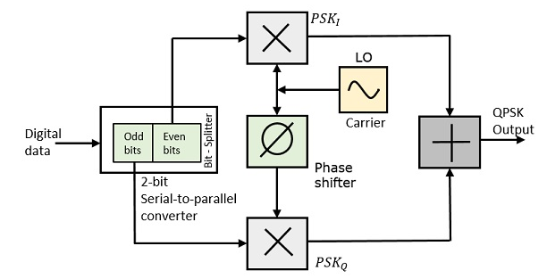
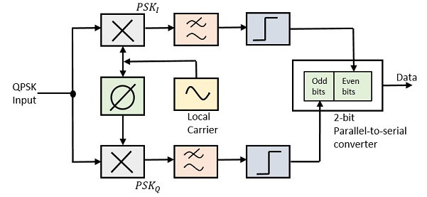

Dr. D.Y Patil Institiute Of Technology ,Pimpri(411018)
Component's Description
> > > > Click on a component to see it's details.
RECIEVER:
The QPSK Modulator uses a bit-splitter, two multipliers with local oscillator, a 2-bit serial to parallel converter, and a summer circuit. Following is the block diagram for the same.

At the modulator’s input, the message signal’s even bits (i.e., 2nd bit, 4th bit, 6th bit, etc.) and odd bits (i.e., 1st bit, 3rd bit, 5th bit, etc.) are separated by the bits splitter and are multiplied with the same carrier to generate odd BPSK (called as PSKI) and even BPSK (called as PSKQ). The PSKQ signal is anyhow phase shifted by 90° before being modulated. The QPSK waveform for two-bits input is as follows, which shows the modulated result for different instances of binary inputs.
TRANSMITTER
The QPSK Demodulator uses two product demodulator circuits with local oscillator, two band pass filters, two integrator circuits, and a 2-bit parallel to serial converter. Following is the diagram for the same.

The two product detectors at the input of demodulator simultaneously demodulate the two BPSK signals. The pair of bits are recovered here from the original data. These signals after processing, are passed to the parallel to serial converter.